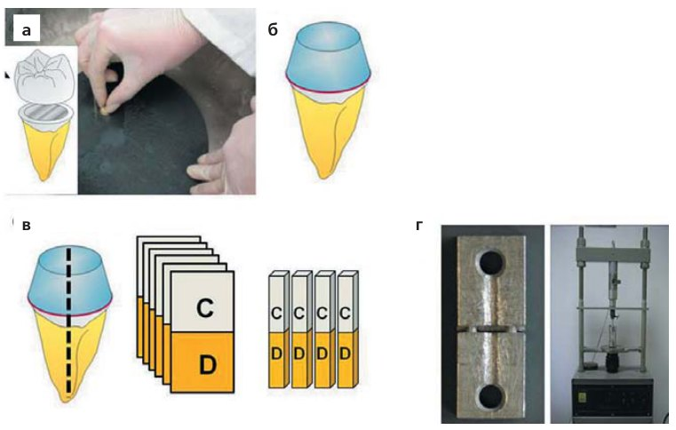
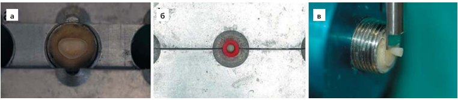
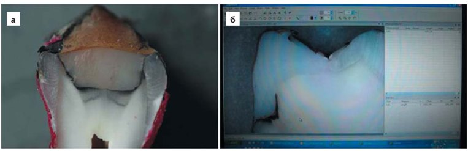

Наука · журнал «ДентАрт» 2014 №1 (74)
Стоматологічні адгезивні системи: переклад науки
DENTAL ADHESIVE SYSTEMS: TRANSLATING THE SCIENCE


Закінчення. Початок читайте в ДентАрті № 4/2013
Аспекти хімічної формули, які слід враховувати клініцистам
Самопротравлюючі адгезиви характеризуються дуже складним хімічним складом. Вони містять іонні мономери з кислотними фосфатами або карбоксильні функціональні групи, гідрофільні мономери, гідрофобні мономери, наповнювачі, воду та/або органічний розчинник в одному розчині.7,16,17,25,31-36 Використання води як розчинника має вирішальне значення для іонізації кислотних мономерів. Разом з водою в самопротравлюючі адгезиви додають такі органічні розчинники, як ацетон, етанол або трет-бутанол, які підтримують гомогенність розчину і підвищують здатність до проникнення гідрофільних функціональних мономерів у поверхню зуба.19,32
Розчинник
Різні склади розчинника у самопротравлюючих адгезивах можуть вплинути на ефективність бондингу.37 Вода — незамінний компонент одноетапних адгезивів. Крім води, для підтримки гомогенності розчину в самопротравлюючі адгезиви додають різні органічні розчинники, такі як ацетон, етанол або трет-бутанол. Ці органічні розчинники почали широко використовуватися в адгезивній стоматології завдяки їх дешевизні, доступності та біосумісності.19,32 Самопротравлюючі адгезиви, що містять органічні розчинники, демонструють вищу ефективність бондингу.38
До того ж розчинник може визначати метод нанесення адгезиву. Після проникнення мономера в демінералізовані тканини зуба розчинники повинні бути видалені з адгезиву. З іншого боку, залишки розчинника можуть перерозчиняти мономери, тим самим піддаючи ризику полімеризацію, що може призвести до появи порожнин і підвищеної проникності адгезивного шару.
Таким чином, для поліпшення випаровування розчинника і забезпечення дифузії мономера широко використовується техніка втирання. Низький тиск пари води робить складним видалення розчинника з розчину адгезиву.39 До відома, адгезиви, які мають у складі лише воду, вимагають тривалішого втирання.
Клініцист також повинен звертати увагу на розчинник, що міститься у складі адгезиву, під час підготовки поверхні зуба до бондингу. Зокрема, при використанні адгезивів з органічними розчинниками стінки порожнини повинні залишатися блискучими. Проте для використання адгезивів на водній основі потрібна сухіша, неблискуча поверхня.40
Кожен інгредієнт проявляє свій специфічний вплив на міцність бондингу, довговічність склеювання, термін придатності, потенціал протравлювання та біосумісність адгезиву. Також інгредієнти можуть впливати один на одного. Незбалансована суміш інгредієнтів може призвести до компрометації потенціалу бондингу, в той час як добре перевірена формула може стати ключовим фактором в успішній реставрації. У результаті постійного вдосконалення зусиллями виробників категорія самопротравлюючих адгезивів постійно поповнюється новими системами з диверсифікованим хімічним складом. У зв'язку з цим можуть виникнути суперечливі результати оцінки ефективності бондингу при використанні самопротравлюючих адгезивів на різних субстратах зуба. Якщо деякі дослідження стверджують, що самопротравлюючі адгезиви мають недостатній потенціал бондингу,7,15,41 то інші твердять, що ці системи — гарна альтернатива адгезивам, які вимагають протравлювання і змивання.25,33,42,43
Загалом, незважаючи на зручність одноетапного використання, жоден із сучасних самопротравлюючих адгезивів не може конкурувати з більш традиційними багатоетапними системами з точки зору ефективності адгезії.1 Але з точки зору потенціалу протравлювання, довговічності бондингу, крайового запечатування та терміну придатності, ці системи все ще потребують удосконалення.15,44 До того ж, категорія самопротравлюючих адгезивів весь час поповнюється новими продуктами, які передусім вимагають доклінічних лабораторних досліджень. Таким чином, необхідні широкі дослідження для отримання глибоких знань про різні інгредієнти для визначення оптимального хімічного складу і для розуміння правильного клінічного використання нових самопротравлюючих адгезивів.
Самоадгезивні текучі композити
Одне з останніх досягнень в адгезивній стоматології — поєднання бондингового агента і композитного матеріалу, так звані компобонди, котрі, як вважають учені, стануть восьмим поколінням адгезивних систем.18 Ці самопротравлюючі і самоадгезивні матеріали поєднують технології текучих композитів і адгезивні властивості бондингових агентів. Таким чином, якщо старі текучі композити необхідно було використовувати в комбінації зі стоматологічною бондинговою системою, то самоадгезивні текучі композитні матеріали виключають необхідність окремого нанесення бонда.21,23
Таке впровадження бондингового агента в текучий композит має великий потенціал щодо економії часу прийому та мінімізації помилок при використанні. Самоадгезивні композити призначені для реставрації невеликих порожнин класу I, порожнин класу V, некаріозних пришийкових уражень, використання як прокладки в реставраціях порожнин класів І і II, для герметизації заглиблень і фісур, а також для лагодження кераміки. Прості маніпуляційні властивості матеріалу Вертиз Флоу роблять його потенційно корисним також при фіксації ортодонтичних брекетів.
Ми досліджували самоадгезивний текучий композит Вертиз Флоу (Керр) при його різних застосуваннях. В одному з досліджень, в якому проводилася реставрація порожнини класу І, була відзначена успішна стабільність протягом 6 місяців.45 Більше того, при відновленні порожнин класу І самоадгезивним текучим композитним матеріалом була відзначена задовільна крайова адаптація.23 Ми також досліджували Вертиз Флоу як герметик для заглиблень і фісур. У цьому лабораторному дослідженні потенціал бондингу і здатність до герметизації самопротравлюючого текучого композитного матеріалу зрівнялася з такою у герметиків, які є на ринку.21 Незважаючи на ці обнадійливі результати, деякі дослідження показали низький потенціал бондингу самоадгезивних композитних матеріалів.22 Отже, для уточнення показань до застосування та підтвердження самоадгезивності ця нова категорія матеріалів має бути протестована в усіх її аспектах.
Методи оцінки і тестування
Клінічні проби дають надійніші докази і відтворюють лабораторні дослідження в ротовій порожнині, що є більш обґрунтованим, однак у сфері стоматологічних матеріалів тести є проблемою. Крім економічних і етичних проблем, пов'язаних з клінічними випробуваннями, час залишається одним з головних обмежень для отримання надійних доказів. Таким чином, для оперативного отримання інформації з перших рук залишаються корисними лабораторні дослідження.7,46
Адгезія може бути вивчена за допомогою мікроскопічних досліджень, аналізу мікропідтікань і визначення міцності приклеювання.46,48
Що ж до оцінки бондингу, то тести міцності адгезії повинні показати кількісну оцінку адгезії матеріалу, ґрунтуючись на тій концепції, що чим міцніше приклеювання, тим краще воно буде виконувати свою функцію.7,37 Тестування міцності з'єднання набуло популярності у сфері досліджень. Легкість проведення тестів на міцність бондингу зумовлена відносною дешевизною цих методів і можливістю швидкого отримання інформації. Ці властивості очевидно пов'язані з інтенсивною продуктивністю стоматологічних адгезивів.49
Два найпопулярніших тести міцності з'єднання — це тест на зсув та мікророзтягування (тест на розрив). У тесті на розрив при перевірці міцності бондингу (фото 2) використовуються стержні поперечною площею 1 мм2, які наполовину складаються із зубних тканин людини, в той час як друга половина — композитний матеріал. Ці дві половини з'єднуються за допомогою досліджуваного адгезиву. Зусилля докладається на розрив стержня на дві половини. Потім навантаження на момент розриву фіксується в ньютонах, після чого міцність адгезії розраховується в мегапаскалях (МПа). Задовільна міцність бондингу, яка ймовірно відповідає такій у роті, дорівнює 20 МПа. При випробуванні міцності бондингу на зсув на рівній поверхні зуба розташована композитна надбудова обмеженого діаметру (фото 3). Сила в МПа розраховується так само, як у тесті на розрив.49-52

Крім тестів на міцність бондингу, широко використовуються дослідження мікропідтікань, при яких відбувається оцінка здатності до герметизації (фото 4).46,48 Основними дефектами, пов'язаними з недостатнім герметизмом, є крайове профарбовування і бактеріальна інвазія, які призводять до вторинного карієсу і ушкодження пульпи. Дослідження мікропідтікань за допомогою барвників здійснюється завдяки проникненню молекул барвника в бактерії, оскільки вони мають однакові розміри.2,47 Чим менше підтікань було виявлено при дослідженні, тим інтенсивнішою була взаємодія між адгезивом і субстратом зуба.
Дослідження мікропідтікань навіть простіші у проведенні, ніж тести адгезії на міцність, і досить популярні при оцінці адгезії до зуба.53


Висновки
Слід підкреслити, що багатоетапні адгезивні системи, які вимагають протравлювання і змивання, залишаються золотим стандартом. Ці системи мають високу ефективність бондингу, і їх переваги доведені клінічно і науково протягом тривалого періоду. Проте завдання визначення ідеальної вологості субстрату зуба залишається недоліком цих систем. До того ж, при застосуванні адгезивних систем, що вимагають протравлювання, необхідні більша кількість клінічних етапів і велика тривалість прийому, що не економить час ні лікаря, ні пацієнта. І навпаки, самопротравлюючі адгезиви зручніші у використанні і менш чутливі до техніки, що і має наслідком підвищення клінічної ефективності. Крім того, при застосуванні цих адгезивів відзначалося зниження післяопераційної чутливості. Проте скарги на обмежену ефективність бондингу, потенціал протравлювання і термін придатності безперервно переслідують спрощені адгезиви.
Передовий матеріал, названий самоадгезивним композитом, поєднав властивості самопротравлюючого адгезиву і текучого композиту. Цей матеріал мінімізує етапи використання та час лікування, що потенційно підвищує довіру пацієнта. З клінічної точки зору, такі властивості привабливі для дитячої стоматології, де проблемою є як довіра, так і досягнення правильної ізоляції. Задовільні результати з точки зору міцності бондингу і крайового прилягання вже були опубліковані в літературі; але все ще необхідні тривалі клінічні й лабораторні дослідження та оцінка матеріалу в кожному його аспекті для підтвердження його самоадгезивних властивостей.
В ідеалі, ми очікуємо від виробників стоматологічних матеріалів створення бондингового агента, що забезпечує надійну і тривалу адгезію при простих процедурах його застосування. Тим часом лікарям необхідно орієнтуватися на науково і клінічно перевірені бондингові агенти, беручи до уваги свій власний досвід та індивідуальність клінічних випадків.
Переклад Романа Савости.
Література
- De Munck, J., et al., Microrotary fatigue resistance of a HEMA-free all-in-one adhesive bonded to dentin. J Adhes Dent, 2007. 9(4): Р. 373-9.
- Finger, W.J., et al., Does application of phase-separated self-etching adhesives affect bond strength? J Adhes Dent, 2007. 9(2): Р. 169-73.
- Perdigao, J., et al., In vitro bonding performance of all-in-one adhesives. Part I—microtensile bond strengths. J Adhes Dent, 2006. 8(6): Р. 367-73.
- Van Landuyt, K.L., et al., Monomer-solvent phase separation in one-step self-etch adhesives. J Dent Res, 2005. 84(2): Р. 183-8.
- Van Landuyt, K.L., et al., Extension of a one-step self-etch adhesive into a multi-step adhesive. Dent Mater, 2006. 22(6): Р. 533-44.
- Van Landuyt, K.L., et al., Origin of interfacial droplets with one-step adhesives. J Dent Res, 2007. 86(8): Р. 739-44.
- Finger, W.J., Does application of phase-separated self-etching adhesives affect the bond strength. J Adhes Dent, 2007. 9(2): Р. 169-73.
- Margvelashvili, M., et al., In vitro evaluation of bonding effectiveness to dentin of all-in-one adhesives. J Dent. 38(2): Р. 106-12.
- Pashley, E.L., et al., Effects of HEMA on water evaporation from water-HEMA mixtures. Dent Mater, 1998. 14(1): Р. 6-10.
- Silva E Souza Junior, M., et al., Adhesive systems: important aspects related to their composition and clinical use. J Appl Oral Sci, 2010. 18(3).
- Hara, A.T., et al., Shear bond strength of hydrophilic adhesive systems to enamel. Am J Dent, 1999. 12(4): Р. 181-4.
- Kanemura, N., H. Sano, and J. Tagami, Tensile bond strength to and SEM evaluation of ground and intact enamel surfaces. J Dent, 1999. 27(7): Р. 523-30.
- Pilecki, P., et al., Microtensile bond strengths to enamel of self-etching and one bottle adhesive systems. J Oral Rehabil, 2005. 32(7): Р. 531-40.
- Kubo, S., et al., Five-year clinical evaluation of two adhesive systems in non-carious cervical lesions. J Dent, 2006. 34(2): Р. 97-105.
- Vichi, A., C. Goracci, and M. Ferrari, Clinical study of the self-adhering flowable composite resin Vertise Flow in Class I restorations: six-month follow-up. International Dentistry South Africa, 2010. 12(1): Р. 14-24.
- Going, R.E., Microleakage around dental restorations: a summarizing review. J Am Dent Assoc, 1972. 84(6): Р. 1349-57.
- Opdam, N.J., et al., Marginal integrity and postoperative sensitivity in Class 2 resin composite restorations in vivo. J Dent, 1998. 26(7): Р. 555-62.
- Taylor, M.J. and E. Lynch, Microleakage. J Dent, 1992. 20(1): Р. 3-10.
- Scherrer, S.S., P.F. Cesar, and M.V. Swain, Direct comparison of the bond strength results of the different test methods: a critical literature review. Dent Mater. 26(2): Р. e78-93.
- Armstrong, S., et al., Adhesion to tooth structure: a critical review of "micro" bond strength test methods. Dent Mater. 26(2): Р. e50-62.
- Braga, R.R., et al., Adhesion to tooth structure: a critical review of "macro" test methods. Dent Mater. 26(2): Р. e38-49.
- Van Meerbeek, B., et al., Relationship between bond-strength tests and clinical outcomes. Dent Mater. 26(2): Р. e100-21.
- Raskin, A., et al., Reliability of in vitro microleakage tests: a literature review. J Adhes Dent, 2001. 3(4): Р. 295-308.